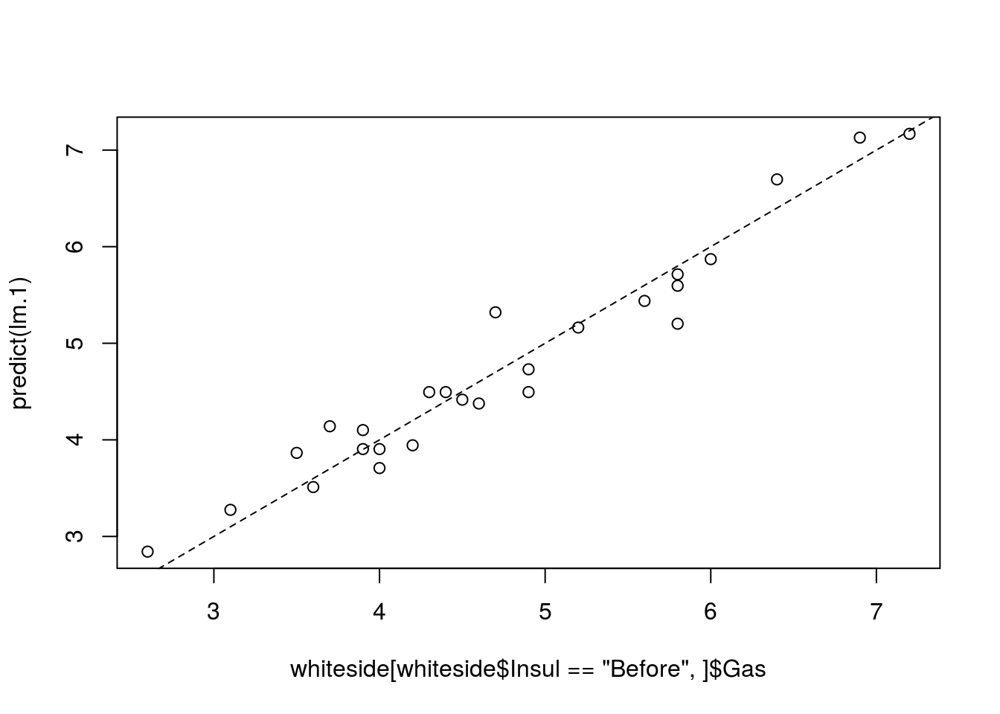
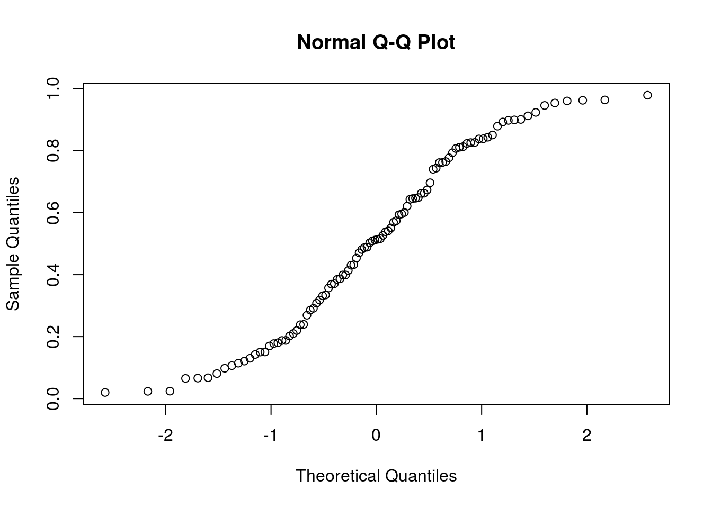
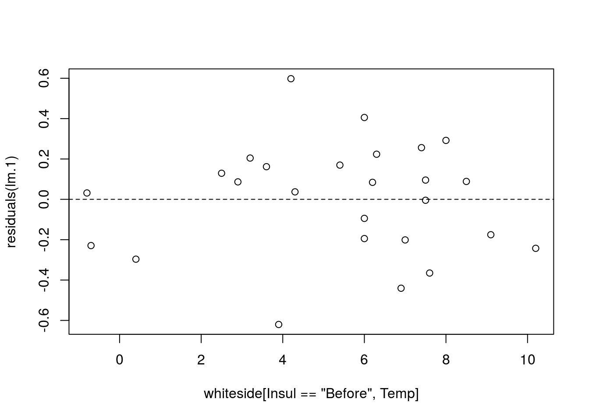
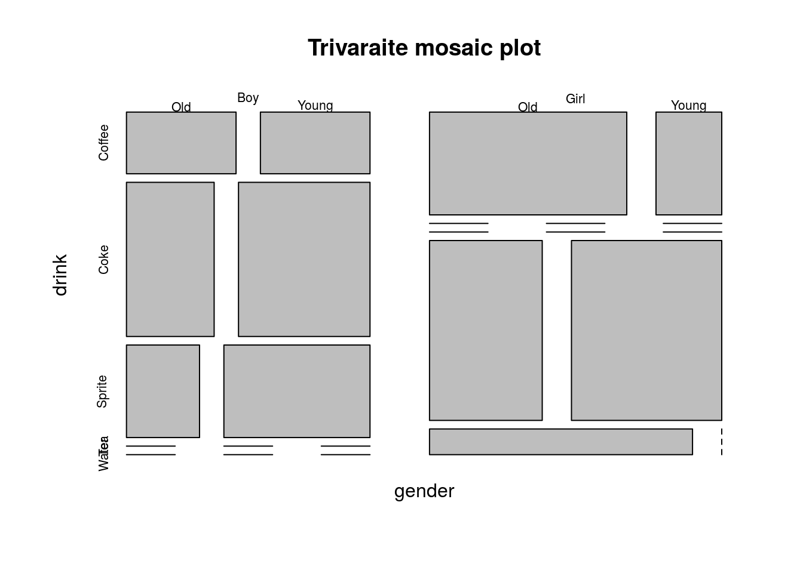
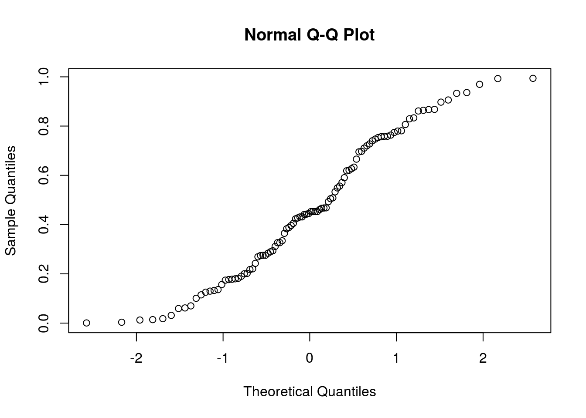

Chapter 5 Linear Models
5.1 Problem Setup
Both examples require some statistical model, but they are very different. The first is a causal inference problem: we want to design an intervention so that we need to recover the causal effect of temperature and pressure. The second is a prediction problem. We don’t care about the causal effects, we just want good predictions.
In this chapter we discuss the causal problem in Example 5.1. This means that when we assume a model, we assume it is the actual data generating process. The second type of problems is discussed in the Supervised Learning Chapter 9.
Lets present the linear model. We assume that a response5 variable is the sum of effects of some factors6. Denoting the dependent by \(y\), the factors by \(x\), and the effects by \(\beta\) the linear model assumption implies that
\[\begin{align} E[y]=\sum_j x_j \beta_j=x'\beta . \tag{5.1} \end{align}\] Clearly, there may be other factors that affect the the caps’ diameters. We thus introduce an error term7, denoted by \(\varepsilon\), to capture the effects of all unmodeled factors. The implied generative process of a sample of \(i=1,\dots,n\) observations it thus \[\begin{align} y_i = \sum x_{i,j} \beta_j + \varepsilon_i , i=1,\dots,n . \tag{5.2} \end{align}\] or in matrix notation \[\begin{align} y = X \beta + \varepsilon . \tag{5.3} \end{align}\]Lets demonstrate Eq.(5.2):
In our cap example, assuming that pressure and temperature have two levels each (say, high and low), we would write \(x_{i,1}=1\) if the pressure of the \(i\)’th measurement was set to high, and \(x_{i,1}=-1\) if the pressure was set to low. Similarly, we would write \(x_{i,2}=1\), and \(x_{i,2}=-1\), if the temperature was set to high, or low, respectively. The coding with \(\{-1,1\}\) is known as effect coding. If you prefer coding with \(\{0,1\}\), this is known as dummy coding.
In Gosset’s classical regression problem, where we try to seek the relation between the heights of sons and fathers then \(p=1\), \(y_i\) is the height of the \(i\)’th father, and \(x_i\) the height of the \(i\)’th son.
There are many reasons these models are so popular:
Before the computer age, these were pretty much the only models that could actually be computed8. The whole Analysis of Variance (ANOVA) literature is an instance of linear models.
For purposes of prediction, where the actual data generating process is not of primary importance, they are popular because they simply work. Why is that? They are simple so that they do not require a lot of data to be computed. Put differently, they may be biased, but their variance is small enough to make them more accurate than other models.
For categorical or factorial predictors, any functional relation can be cast as a linear model.
For the purpose of screening, where we only want to show the existence of an effect, and are less interested in the magnitude of the effect, a linear model is enough.
If the true generative relation is not linear, but smooth enough, then the linear function is a good approximation via Taylor’s theorem.
There are still two matters we have to attend: How the estimate \(\beta\), and how to perform inference.
In linear models the estimation of \(\beta\) is done using the method of least squares. For this reason, a linear model with least squares estimation is known as Ordinary Least Squares (OLS). The OLS problem:
\[\begin{align} \hat \beta_{OLS}:= argmin_\beta \{ \sum_i (y_i-x_i'\beta)^2 \}, \tag{5.4} \end{align}\] and in matrix notation \[\begin{align} \hat \beta_{OLS}:= argmin_\beta \{ \Vert y-X\beta \Vert^2_2 \}. \tag{5.5} \end{align}\]Different software suits, and even different R packages, solve Eq.(5.4) in different ways so that we skip the details of how exactly it is solved.
The last matter we need to attend is how to do inference on \(\hat \beta_{OLS}\). For that, we will need some assumptions on \(\varepsilon\). A typical set of assumptions is the following:
- Independence: we assume \(\varepsilon_i\) are independent of everything else. Think of them as the measurement error of an instrument: it is independent of the measured value and of previous measurements.
- Centered: we assume that \(E[\varepsilon]=0\), meaning there is no systematic error.
- Normality: we will typically assume that \(\varepsilon \sim \mathcal{N}(0,\sigma^2)\), but we will later see that this is not really required.
We emphasize that these assumptions are only needed for inference on \(\hat \beta\) and not for the estimation itself, which is done by the purely algorithmic framework of OLS.
Given the above assumptions, we can apply some probability theory and linear algebra to get \[\begin{align} \hat \beta_{OLS} \sim \mathcal{N}(\beta, (X'X)^{-1} \sigma^2) \tag{5.6} \end{align}\]The reason I am not too strict about the normality assumption above, is that Eq.(5.6) is approximately correct even if \(\varepsilon\) is not normal, provided that there are many more observations than factors (\(n \gg p\)).
5.2 OLS Estimation
We are now ready to estimate some linear models with R. We will use the whiteside data from the MASS package,recording the outside temperature and gas consumption, before and after insulation.
library(MASS)
data(whiteside)
head(whiteside) # inspect the data## Insul Temp Gas
## 1 Before -0.8 7.2
## 2 Before -0.7 6.9
## 3 Before 0.4 6.4
## 4 Before 2.5 6.0
## 5 Before 2.9 5.8
## 6 Before 3.2 5.8We do the OLS estimation with lm function, possibly the most important function in R.
lm.1 <- lm(Gas~Temp, data=whiteside[whiteside$Insul=='Before',]) # OLS estimation Things to note:
- We used the tilde syntax
Gas~Temp, reading “gas as linear function of temperature”. - The
dataargument tells R where to look for the variables Gas and Temp. We used only observations before the insulation. - The result is assigned to the object
lm.1.
Alternative formulations with the same results would be
lm.1 <- lm(y=Gas, x=Temp, data=whiteside[whiteside$Insul=='Before',])
lm.1 <- lm(y=whiteside[whiteside$Insul=='Before',]$Gas, x=whiteside[whiteside$Insul=='Before',]$Temp) The output is an object of class lm.
class(lm.1)## [1] "lm"Objects of class lm are very complicated. It stored a lot of information which will be later used for inference, plotting, etc. The str function, short for “structure” shows us the various elements of the object.
str(lm.1)## List of 12
## $ coefficients : Named num [1:2] 6.854 -0.393
## ..- attr(*, "names")= chr [1:2] "(Intercept)" "Temp"
## $ residuals : Named num [1:26] 0.0316 -0.2291 -0.2965 0.1293 0.0866 ...
## ..- attr(*, "names")= chr [1:26] "1" "2" "3" "4" ...
## $ effects : Named num [1:26] -24.2203 -5.6485 -0.2541 0.1463 0.0988 ...
## ..- attr(*, "names")= chr [1:26] "(Intercept)" "Temp" "" "" ...
## $ rank : int 2
## $ fitted.values: Named num [1:26] 7.17 7.13 6.7 5.87 5.71 ...
## ..- attr(*, "names")= chr [1:26] "1" "2" "3" "4" ...
## $ assign : int [1:2] 0 1
## $ qr :List of 5
## ..$ qr : num [1:26, 1:2] -5.099 0.196 0.196 0.196 0.196 ...
## .. ..- attr(*, "dimnames")=List of 2
## .. .. ..$ : chr [1:26] "1" "2" "3" "4" ...
## .. .. ..$ : chr [1:2] "(Intercept)" "Temp"
## .. ..- attr(*, "assign")= int [1:2] 0 1
## ..$ qraux: num [1:2] 1.2 1.35
## ..$ pivot: int [1:2] 1 2
## ..$ tol : num 1e-07
## ..$ rank : int 2
## ..- attr(*, "class")= chr "qr"
## $ df.residual : int 24
## $ xlevels : Named list()
## $ call : language lm(formula = Gas ~ Temp, data = whiteside[whiteside$Insul == "Before", ])
## $ terms :Classes 'terms', 'formula' language Gas ~ Temp
## .. ..- attr(*, "variables")= language list(Gas, Temp)
## .. ..- attr(*, "factors")= int [1:2, 1] 0 1
## .. .. ..- attr(*, "dimnames")=List of 2
## .. .. .. ..$ : chr [1:2] "Gas" "Temp"
## .. .. .. ..$ : chr "Temp"
## .. ..- attr(*, "term.labels")= chr "Temp"
## .. ..- attr(*, "order")= int 1
## .. ..- attr(*, "intercept")= int 1
## .. ..- attr(*, "response")= int 1
## .. ..- attr(*, ".Environment")=<environment: R_GlobalEnv>
## .. ..- attr(*, "predvars")= language list(Gas, Temp)
## .. ..- attr(*, "dataClasses")= Named chr [1:2] "numeric" "numeric"
## .. .. ..- attr(*, "names")= chr [1:2] "Gas" "Temp"
## $ model :'data.frame': 26 obs. of 2 variables:
## ..$ Gas : num [1:26] 7.2 6.9 6.4 6 5.8 5.8 5.6 4.7 5.8 5.2 ...
## ..$ Temp: num [1:26] -0.8 -0.7 0.4 2.5 2.9 3.2 3.6 3.9 4.2 4.3 ...
## ..- attr(*, "terms")=Classes 'terms', 'formula' language Gas ~ Temp
## .. .. ..- attr(*, "variables")= language list(Gas, Temp)
## .. .. ..- attr(*, "factors")= int [1:2, 1] 0 1
## .. .. .. ..- attr(*, "dimnames")=List of 2
## .. .. .. .. ..$ : chr [1:2] "Gas" "Temp"
## .. .. .. .. ..$ : chr "Temp"
## .. .. ..- attr(*, "term.labels")= chr "Temp"
## .. .. ..- attr(*, "order")= int 1
## .. .. ..- attr(*, "intercept")= int 1
## .. .. ..- attr(*, "response")= int 1
## .. .. ..- attr(*, ".Environment")=<environment: R_GlobalEnv>
## .. .. ..- attr(*, "predvars")= language list(Gas, Temp)
## .. .. ..- attr(*, "dataClasses")= Named chr [1:2] "numeric" "numeric"
## .. .. .. ..- attr(*, "names")= chr [1:2] "Gas" "Temp"
## - attr(*, "class")= chr "lm"At this point, we only want \(\hat \beta_{OLS}\) which can be extracted with the coef function.
coef(lm.1)## (Intercept) Temp
## 6.8538277 -0.3932388Things to note:
R automatically adds an
(Intercept)term. This means we estimate \(y_i=\beta_0 + \beta_1 Gas + \varepsilon\) and not \(y_i=\beta_1 Gas + \varepsilon_i\). This makes sense because we are interested in the variability of the gas consumption about its mean, and not about zero.The effect of temperature, i.e., \(\hat \beta_1\), is -0.39. The negative sign means that the higher the temperature, the less gas is consumed. The magnitude of the coefficient means that for a unit increase in the outside temperature, the gas consumption decreases by 0.39 units.
We can use the predict function to make predictions, but we emphasize that if the purpose of the model is to make predictions, and not interpret coefficients, better skip to The Supervised Learning Chapter 9.
plot(predict(lm.1)~whiteside[whiteside$Insul=='Before',]$Gas)
abline(0,1, lty=2)
The model seems to fit the data nicely. A common measure of the goodness of fit is the coefficient of determination, more commonly known as the \(R^2\).
It can be easily computed
R2 <- function(y, y.hat){
numerator <- (y-y.hat)^2 %>% sum
denominator <- (y-mean(y))^2 %>% sum
1-numerator/denominator
}
R2(whiteside[whiteside$Insul=='Before',]$Gas, predict(lm.1))## [1] 0.9438081Obviously, R does provide the means to compute something as basic as \(R^2\), but I will let you find it for yourselves.
5.3 Inference
To perform inference on \(\hat \beta\) in order to test hypotheses and construct confidence intervals, we need to quantify the uncertainly in the reported \(\hat \beta\). This is exactly what Eq.(5.6) gives us.
Luckily, we don’t need to manipulate multivariate distributions manually, and everything we need is already implemented. The most important function is summary which gives us an overview of the model’s fit. We emphasize that that fitting a model with lm is an assumption free algorithmic step. Inference using summary is not assumption free, and requires the set of assumptions leading to Eq.(5.6).
summary(lm.1)##
## Call:
## lm(formula = Gas ~ Temp, data = whiteside[whiteside$Insul ==
## "Before", ])
##
## Residuals:
## Min 1Q Median 3Q Max
## -0.62020 -0.19947 0.06068 0.16770 0.59778
##
## Coefficients:
## Estimate Std. Error t value Pr(>|t|)
## (Intercept) 6.85383 0.11842 57.88 <2e-16 ***
## Temp -0.39324 0.01959 -20.08 <2e-16 ***
## ---
## Signif. codes: 0 '***' 0.001 '**' 0.01 '*' 0.05 '.' 0.1 ' ' 1
##
## Residual standard error: 0.2813 on 24 degrees of freedom
## Multiple R-squared: 0.9438, Adjusted R-squared: 0.9415
## F-statistic: 403.1 on 1 and 24 DF, p-value: < 2.2e-16Things to note:
- The estimated \(\hat \beta\) is reported in the `Coefficients’ table, which has point estimates, standard errors, t-statistics, and the p-values of a two-sided hypothesis test for each coefficient \(H_{0,j}:\beta_j=0, j=1,\dots,p\).
- The \(R^2\) is reported at the bottom. The “Adjusted R-squared” is a variation that compensates for the model’s complexity.
- The original call to
lmis saved in theCallsection. - Some summary statistics of the residuals (\(y_i-\hat y_i\)) in the
Residualssection. - The “residuals standard error”9 is \(\sqrt{(n-p)^{-1} \sum_i (y_i-\hat y_i)^2}\). The “degrees of freedom” are \(n-p\) which can be thought of as the hardness of the problem.
As the name suggests, summary is merely a summary. The full summary(lm.1) object is a monstrous object. Its various elements can be queried using str(sumary(lm.1)).
Can we check the assumptions required for inference? Some. Let’s start with the linearity assumption. If we were wrong, and the data is not arranged about a linear line, the residuals will have some shape.
plot(residuals(lm.1)~whiteside[whiteside$Insul=='Before',]$Temp); abline(0,0, lty=2)
I can’t say I see any shape. Let’s fit a wrong model, just to see what “shape” means.
lm.1.1 <- lm(Gas~I(Temp^2), data=whiteside[whiteside$Insul=='Before',])
plot(residuals(lm.1.1)~whiteside[whiteside$Insul=='Before',]$Temp); abline(0,0, lty=2)
Things to note:
- We used
I(Temp)^2to specify the model \(Gas_i=\beta_0 + \beta_1 Temp^2+ \varepsilon\). - The residuals have a “belly”. Because they are not a cloud of noise around the linear trend, and we have the wrong model.
To the next assumption. We assumed \(\varepsilon_i\) are independent of everything else. The residuals, \(y_i-\hat y_i\) can be thought of a sample of \(\varepsilon_i\). When diagnosing the linearity assumption, we already saw their distribution does not vary with the \(x\)’s, Temp in our case. They may be correlated with themselves; a positive departure from the model, may be followed by a series of positive departures etc. Diagnosing these auto-correlations is a real art, which is not part of our course.
The last assumption we required is normality. As previously stated, if \(n \gg p\), this assumption is not really needed. If \(n \sim p\), i.e., \(n\) is in the order of \(p\), we need to verify this assumption. My favorite tool for this task is the qqplot. A qqplot compares the quantiles of the sample with the respective quantiles of an assumed distribution. If quantiles align along a line, the assumed distribution if OK. If quantiles depart from a line, then clearly the assumed distribution does not fit the sample.
qqnorm(resid((lm.1)))
The qqnorm function plots a qqplot against a normal distribution. Judging from the figure, the normality assumption is quite plausible. Let’s try the same on a non-normal sample, namely a uniformly distributed sample, to see how that would look.
qqnorm(runif(100))
5.3.1 Testing a Hypothesis on a Single Coefficient
The first inferential test we consider is a hypothesis test on a single coefficient. In our gas example, we may want to test that the temperature has no effect on the gas consumption. The answer for that is given immediately by summary(lm.1)
summary.lm1 <- summary(lm.1)
coefs.lm1 <- summary.lm1$coefficients
coefs.lm1## Estimate Std. Error t value Pr(>|t|)
## (Intercept) 6.8538277 0.11842341 57.87561 2.717533e-27
## Temp -0.3932388 0.01958601 -20.07754 1.640469e-16We see that the p-value for \(H_{0,1}:\hat \beta_1=0\) against a two sided alternative is effectively 0.
5.3.2 Constructing a Confidence Interval on a Single Coefficient
Since the summary function gives us the standard errors of \(\hat \beta\), we can immediately compute \(\hat \beta_j \pm 2 \sqrt{Var[\hat \beta_j]}\) to get ourselves a (roughly) \(95\%\) confidence interval. In our example the interval is
coefs.lm1[2,1] + c(-1,1) * coefs.lm1[2,2]## [1] -0.4128248 -0.37365285.3.3 Multiple Regression
The data we now use10 contains a hypothetical sample of \(60\) participants who are divided into three stress reduction treatment groups (mental, physical, and medical) and two gender groups (male and female). The stress reduction values are represented on a scale that ranges from 1 to 5. This dataset can be conceptualized as a comparison between three stress treatment programs, one using mental methods, one using physical training, and one using medication across genders. The values represent how effective the treatment programs were at reducing participant’s stress levels, with higher numbers indicating higher effectiveness.
data <- read.csv('dataset_anova_twoWay_comparisons.csv')
head(data)## Treatment Age StressReduction
## 1 mental young 10
## 2 mental young 9
## 3 mental young 8
## 4 mental mid 7
## 5 mental mid 6
## 6 mental mid 5How many observations per group?
table(data$Treatment, data$Age)##
## mid old young
## medical 3 3 3
## mental 3 3 3
## physical 3 3 3Since we have two factorial predictors, this multiple regression is nothing but a two way ANOVA. Let’s fit the model and inspect it.
lm.2 <- lm(StressReduction~.-1,data=data)
summary(lm.2)##
## Call:
## lm(formula = StressReduction ~ . - 1, data = data)
##
## Residuals:
## Min 1Q Median 3Q Max
## -1 -1 0 1 1
##
## Coefficients:
## Estimate Std. Error t value Pr(>|t|)
## Treatmentmedical 4.0000 0.3892 10.276 7.34e-10 ***
## Treatmentmental 6.0000 0.3892 15.414 2.84e-13 ***
## Treatmentphysical 5.0000 0.3892 12.845 1.06e-11 ***
## Ageold -3.0000 0.4264 -7.036 4.65e-07 ***
## Ageyoung 3.0000 0.4264 7.036 4.65e-07 ***
## ---
## Signif. codes: 0 '***' 0.001 '**' 0.01 '*' 0.05 '.' 0.1 ' ' 1
##
## Residual standard error: 0.9045 on 22 degrees of freedom
## Multiple R-squared: 0.9794, Adjusted R-squared: 0.9747
## F-statistic: 209 on 5 and 22 DF, p-value: < 2.2e-16Things to note:
The
StressReduction~.syntax is read as “Stress reduction as a function of everything else”.The
StressReduction~.-1means that I do not want an intercept in the model, so that the baseline response is 0.All the (main) effects seem to be significant.
The data has 2 factors, but the coefficients table has 4 predictors. This is because
lmnoticed thatTreatmentandAgeare factors. Their numerical values are meaningless, and it has thus constructed a dummy variable for each level of each factor. The names of the effect are a concatenation of the factor’s name, and its level. You can inspect these dummy variables with themodel.matrixcommand.
head(model.matrix(lm.2))## Treatmentmedical Treatmentmental Treatmentphysical Ageold Ageyoung
## 1 0 1 0 0 1
## 2 0 1 0 0 1
## 3 0 1 0 0 1
## 4 0 1 0 0 0
## 5 0 1 0 0 0
## 6 0 1 0 0 0If you don’t want the default dummy coding, look at ?contrasts.
If you are more familiar with the ANOVA literature, or that you don’t want the effects of each level separately, but rather, the effect of all the levels of each factor, use the anova command.
anova(lm.2)## Analysis of Variance Table
##
## Response: StressReduction
## Df Sum Sq Mean Sq F value Pr(>F)
## Treatment 3 693 231.000 282.33 <2e-16 ***
## Age 2 162 81.000 99.00 1e-11 ***
## Residuals 22 18 0.818
## ---
## Signif. codes: 0 '***' 0.001 '**' 0.01 '*' 0.05 '.' 0.1 ' ' 1Things to note:
- The ANOVA table, unlike the
summaryfunction, tests if any of the levels of a factor has an effect, and not one level at a time. - The significance of each factor is computed using an F-test.
- The degrees of freedom, encoding the nubmer of levels of a factor, is given in the
Dfcolumn. - The StressReduction seems to vary for different ages and treatments, since both factors are significant.
As in any two-way ANOVA, we may want to ask if different age groups respond differently to different treatments. In the statistical parlance, this is called an interaction, or more precisely, an interaction of order 2.
lm.3 <- lm(StressReduction~Treatment+Age+Treatment:Age-1,data=data)The syntax StressReduction~Treatment+Age+Treatment:Age-1 tells R to include main effects of Treatment, Age, and their interactions. Here are other ways to specify the same model.
lm.3 <- lm(StressReduction ~ Treatment * Age - 1,data=data)
lm.3 <- lm(StressReduction~(.)^2 - 1,data=data)The syntax Treatment * Age means “mains effects with second order interactions”. The syntax (.)^2 means “everything with second order interactions”
Lets inspect the model
summary(lm.3)##
## Call:
## lm(formula = StressReduction ~ Treatment + Age + Treatment:Age -
## 1, data = data)
##
## Residuals:
## Min 1Q Median 3Q Max
## -1 -1 0 1 1
##
## Coefficients:
## Estimate Std. Error t value Pr(>|t|)
## Treatmentmedical 4.000e+00 5.774e-01 6.928 1.78e-06 ***
## Treatmentmental 6.000e+00 5.774e-01 10.392 4.92e-09 ***
## Treatmentphysical 5.000e+00 5.774e-01 8.660 7.78e-08 ***
## Ageold -3.000e+00 8.165e-01 -3.674 0.00174 **
## Ageyoung 3.000e+00 8.165e-01 3.674 0.00174 **
## Treatmentmental:Ageold 4.246e-16 1.155e+00 0.000 1.00000
## Treatmentphysical:Ageold 1.034e-15 1.155e+00 0.000 1.00000
## Treatmentmental:Ageyoung -3.126e-16 1.155e+00 0.000 1.00000
## Treatmentphysical:Ageyoung 5.128e-16 1.155e+00 0.000 1.00000
## ---
## Signif. codes: 0 '***' 0.001 '**' 0.01 '*' 0.05 '.' 0.1 ' ' 1
##
## Residual standard error: 1 on 18 degrees of freedom
## Multiple R-squared: 0.9794, Adjusted R-squared: 0.9691
## F-statistic: 95 on 9 and 18 DF, p-value: 2.556e-13Things to note:
- There are still \(5\) main effects, but also \(4\) interactions. This is because when allowing a different average response for every \(Treatment*Age\) combination, we are effectively estimating \(3*3=9\) cell means, even if they are not parametrized as cell means, but rather as main effect and interactions.
- The interactions do not seem to be significant.
Asking if all the interactions are significant, is asking if the different age groups have the same response to different treatments. Can we answer that based on the various interactions? We might, but it is possible that no single interaction is significant, while the combination is. To test for all the interactions together, we can simply check if the model without interactions is (significantly) better than a model with interactions. I.e., compare lm.2 to lm.3. This is done with the anova command.
anova(lm.2,lm.3, test='F')## Analysis of Variance Table
##
## Model 1: StressReduction ~ (Treatment + Age) - 1
## Model 2: StressReduction ~ Treatment + Age + Treatment:Age - 1
## Res.Df RSS Df Sum of Sq F Pr(>F)
## 1 22 18
## 2 18 18 4 0 0 1We see that lm.3 is not better than lm.2, so that we can conclude that there are no interactions: different ages have the same response to different treatments.
5.3.4 Testing a Hypothesis on a Single Contrast
Returning to lm.2.
coef(summary(lm.2))## Estimate Std. Error t value Pr(>|t|)
## Treatmentmedical 4 0.3892495 10.276186 7.336391e-10
## Treatmentmental 6 0.3892495 15.414279 2.835706e-13
## Treatmentphysical 5 0.3892495 12.845233 1.064101e-11
## Ageold -3 0.4264014 -7.035624 4.647299e-07
## Ageyoung 3 0.4264014 7.035624 4.647299e-07We see that the effect of the various treatments is rather similar. It is possible that all treatments actually have the same effect. Comparing the levels of a factor is called a contrast. Let’s test if the medical treatment, has in fact, the same effect as the physical treatment.
library(multcomp)
my.contrast <- matrix(c(-1,0,1,0,0), nrow = 1)
lm.4 <- glht(lm.2, linfct=my.contrast)
summary(lm.4)##
## Simultaneous Tests for General Linear Hypotheses
##
## Fit: lm(formula = StressReduction ~ . - 1, data = data)
##
## Linear Hypotheses:
## Estimate Std. Error t value Pr(>|t|)
## 1 == 0 1.0000 0.4264 2.345 0.0284 *
## ---
## Signif. codes: 0 '***' 0.001 '**' 0.01 '*' 0.05 '.' 0.1 ' ' 1
## (Adjusted p values reported -- single-step method)Things to note:
- A contrast is a linear function of the coefficients. In our example \(H_0:\beta_1-\beta_3=0\), which justifies the construction of `my.contrast’.
- We used the
glhtfunction (generalized linear hypothesis test) from the package multcompt. - The contrast is significant, i.e., the effect of a medical treatment, is different than that of a physical treatment.
Bibliography
Friedman, Jerome, Trevor Hastie, and Robert Tibshirani. 2001. The Elements of Statistical Learning. Vol. 1. Springer series in statistics Springer, Berlin.
Venables, William N, and Brian D Ripley. 2013. Modern Applied Statistics with S-Plus. Springer Science & Business Media.
Greene, William H. 2003. Econometric Analysis. Pearson Education India.
The “response” is also know as the “dependent” variable, of the “labels” in the machine learning literature.↩
The “factors” are also known as the “independent variable”, the “design”, the “features” and the “attributes”.↩
The “error term” is also known as the “noise”, or the “common causes of variability”.↩
By “computed” we mean what statisticians call “fitted”, or “estimated”, and computer scientists call “learned”.↩
Sometimes known as the Root Mean Squared Error (RMSE).↩
The example is taken from http://rtutorialseries.blogspot.co.il/2011/02/r-tutorial-series-two-way-anova-with.html↩